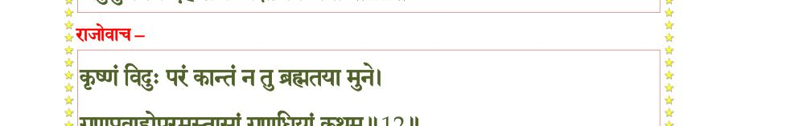
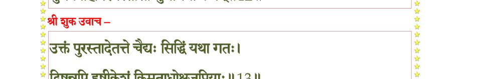
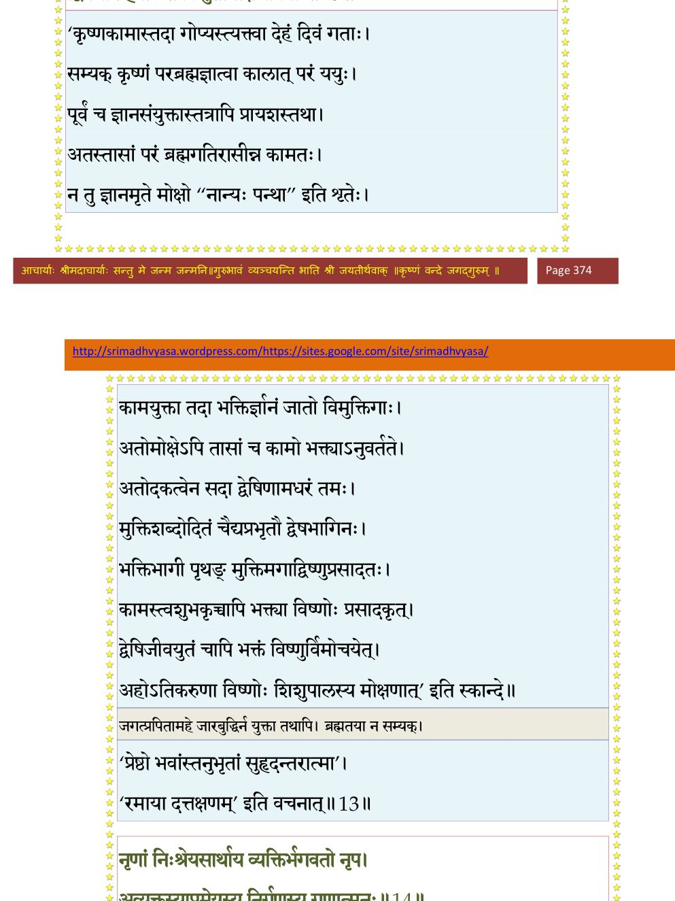
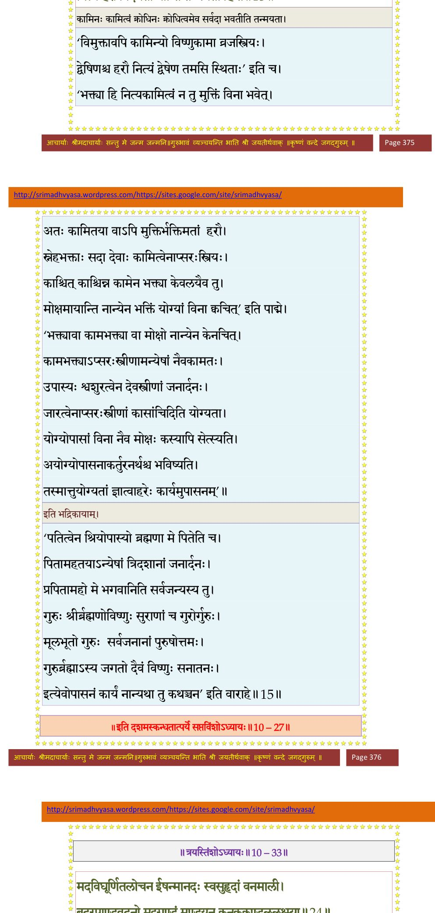

स्कन्ध 10 · अध्याय 27
श्लोक १
श्रीशुक उवाच–
भगवानपि तां रात्रिं शारदोत्फुल्लमल्लिकाम् ।
वीक्ष्य रन्तुं मनश्चक्रे योगमायामुपाश्रितः।। १ ।।
भगवानपि तां रात्रिं शारदोत्फुल्लमल्लिकाम् ।
वीक्ष्य रन्तुं मनश्चक्रे योगमायामुपाश्रितः।। १ ।।
श्लोक २
तदोडुराजः ककुभः करैर्मुखं प्राच्या विलिम्पन्नरुणैश्च शन्तमैः ।
स चर्षणीनामुदगाच्छुचो मृजन् प्रियः प्रियाया इव दीर्घदर्शनः।।२।।
स चर्षणीनामुदगाच्छुचो मृजन् प्रियः प्रियाया इव दीर्घदर्शनः।।२।।
श्लोक ३
दृष्ट्वा मुकुन्दस्तमखण्डमण्डलं रामाननाभं नवकुङ्कुमारुणम् ।
वनं च तत्कोमलगोभिरञ्जितं जगौ कलं वामदृशां मनोरमम्।। ३ ।।
वनं च तत्कोमलगोभिरञ्जितं जगौ कलं वामदृशां मनोरमम्।। ३ ।।
श्लोक ४
निशम्य गीतं तदनङ्गवर्धनं व्रजस्त्रियः कृष्णनिषक्तमानसाः ।
आजग्मुरन्योन्यमलक्षिताशयाः स यत्र कार्तस्वरलोलकुण्डलाः।। ४ ।।
आजग्मुरन्योन्यमलक्षिताशयाः स यत्र कार्तस्वरलोलकुण्डलाः।। ४ ।।
श्लोक ५
दुहन्त्योऽभिययुः काश्चिद् दोहं हित्वा समुत्सुकाः ।
पयोऽधिश्रित्य संयावमनुद्वास्यापरा ययुः ।। ५ ।।
पयोऽधिश्रित्य संयावमनुद्वास्यापरा ययुः ।। ५ ।।
श्लोक ६
परिवेषयन्त्यस्तद् हित्वा पाययन्त्यः शिशून् पयः ।
शुश्रूषन्त्यः पतीन् काश्चिदश्नन्त्योऽपास्य भोजनम्।। ६ ।।
शुश्रूषन्त्यः पतीन् काश्चिदश्नन्त्योऽपास्य भोजनम्।। ६ ।।
श्लोक ७
लिम्पन्त्यः प्रमृजन्त्योऽन्या अञ्जन्त्यः काश्च लोचने ।
व्यत्यस्तवस्त्राभरणाः काश्चित् कृष्णान्तिकं ययुः।। ७ ।।
व्यत्यस्तवस्त्राभरणाः काश्चित् कृष्णान्तिकं ययुः।। ७ ।।
श्लोक ८
ता वार्यमाणाः पतिभिः पितृभिर्भ्रातृबन्धुभिः ।
गोविन्दापहृतात्मानो न न्यवर्तन्त योषितः।। ८ ।।
गोविन्दापहृतात्मानो न न्यवर्तन्त योषितः।। ८ ।।
श्लोक ९
अन्तर्गृहगताः काश्चिद् गोप्योऽलब्धविनिर्गमाः ।
कृष्णं तद्भावनायुक्ता दध्युर्मीलितलोचनाः ।। ९ ।।
कृष्णं तद्भावनायुक्ता दध्युर्मीलितलोचनाः ।। ९ ।।
श्लोक १०
दुस्सहप्रेष्ठविरहतीव्रतापधुताशुभाः ।
ध्यानप्राप्ताच्युताश्लेषनिर्वृत्या क्षीणमङ्गलाः ।। १० ।।
ध्यानप्राप्ताच्युताश्लेषनिर्वृत्या क्षीणमङ्गलाः ।। १० ।।
श्लोक ११
तमेव परमात्मानं जारबुद्ध्याऽपि सङ्गताः ।
जहुर्गुणमयं देहं सद्यः प्रक्षीणबन्धनाः ।। ११ ।।
जहुर्गुणमयं देहं सद्यः प्रक्षीणबन्धनाः ।। ११ ।।
भागवततात्पर्यनिर्णय

श्लोक १२
राजोवाच–
कृष्णं विदुः परं कान्तं न तु ब्रह्मतया मुने ।
गुणप्रवाहोपरमस्तासां गुणधियां कथम्।। १२ ।।
कृष्णं विदुः परं कान्तं न तु ब्रह्मतया मुने ।
गुणप्रवाहोपरमस्तासां गुणधियां कथम्।। १२ ।।
भागवततात्पर्यनिर्णय

श्लोक १३
श्रीशुक उवाच–
उक्तं पुरस्तादेेतत्ते चैद्यः सिद्धिं यथा गतः ।
द्विषन्नपि हृषीकेशं किमुताधोक्षजप्रियाः।। १३ ।।
उक्तं पुरस्तादेेतत्ते चैद्यः सिद्धिं यथा गतः ।
द्विषन्नपि हृषीकेशं किमुताधोक्षजप्रियाः।। १३ ।।
भागवततात्पर्यनिर्णय

श्लोक १४
नृणां निःश्रेयसार्थाय व्यक्तिर्भगवतो नृप ।
अव्यक्तस्याप्रमेयस्य निर्गुणस्य गुणात्मनः।। १४ ।।
अव्यक्तस्याप्रमेयस्य निर्गुणस्य गुणात्मनः।। १४ ।।
भागवततात्पर्यनिर्णय
श्लोक १५
कामं क्रोधं भयं मोहं मैत्रीं सौहृदमेव च ।
नित्यं हरौ विदधतो यान्ति तन्मयतां हि ते।। १५ ।।
नित्यं हरौ विदधतो यान्ति तन्मयतां हि ते।। १५ ।।
भागवततात्पर्यनिर्णय

श्लोक १६
न चैवं विस्मयः कार्यो भवता भगवत्यजे ।
योगेश्वरेश्वरे कृष्णे यत एतद् विमुच्यते ।। १६ ।।
योगेश्वरेश्वरे कृष्णे यत एतद् विमुच्यते ।। १६ ।।
श्लोक १७
ता दृष्ट्वाऽन्तिकमायाता भगवान् व्रजयोषितः ।
अवदद् वदतां श्रेष्ठो वाचःपाशैर्विमोहयन् ।। १७ ।।
अवदद् वदतां श्रेष्ठो वाचःपाशैर्विमोहयन् ।। १७ ।।
श्लोक १८
श्रीभगवानुवाच–
स्वागतं वो महाभागाः प्रियं किं करवाणि वः ।
व्रजस्यानामयं कच्चिद् ब्रूतागमनकारणम्।। १८ ।।
स्वागतं वो महाभागाः प्रियं किं करवाणि वः ।
व्रजस्यानामयं कच्चिद् ब्रूतागमनकारणम्।। १८ ।।
श्लोक १९
रजन्येषा घोररूपा घोरसत्वनिषेविता ।
प्रतियात व्रजं नेह स्थेयं स्त्रीभिः सुमध्यमाः।। १९ ।।
प्रतियात व्रजं नेह स्थेयं स्त्रीभिः सुमध्यमाः।। १९ ।।
श्लोक २०
मातरः पितरः पुत्रा भ्रातरः पतयश्च वः ।
विचिन्वन्तो ह्यपश्यन्तो मा कृध्वं बन्धुसाध्वसम्।। २० ।।
विचिन्वन्तो ह्यपश्यन्तो मा कृध्वं बन्धुसाध्वसम्।। २० ।।
श्लोक २१
दृष्टं वनं कुसुमितं राकेशकररञ्जितम् ।
यमुनानिलनीरैजत्तरुपल्लवशोभितम्।। २१ ।।
यमुनानिलनीरैजत्तरुपल्लवशोभितम्।। २१ ।।
श्लोक २२
तद् यात माचिरं गोष्ठं शुश्रूषध्वं पतीन् सतीः ।
क्रन्दन्ति वत्सा बालाश्च तान् पाययत दुह्यत।। २२ ।।
क्रन्दन्ति वत्सा बालाश्च तान् पाययत दुह्यत।। २२ ।।
श्लोक २३
अथवा मदभिस्नेहाद् भवत्यो यन्त्रिताशयाः ।
आगता ह्युपपन्नं तत् प्रीयन्ते मम जन्तवः।। २३ ।।
आगता ह्युपपन्नं तत् प्रीयन्ते मम जन्तवः।। २३ ।।
श्लोक २४
भर्तुः शुश्रूषणं स्त्रीणां परो धर्मो ह्यमायया ।
तद् बन्धूनां च कल्याणं प्रजानां चानुपोषणम्।। २४ ।।
तद् बन्धूनां च कल्याणं प्रजानां चानुपोषणम्।। २४ ।।
श्लोक २५
दुश्शीलो दुर्भगो वृद्धो जडो रोग्यधनोऽपि वा ।
पतिः स्त्रीभिर्न हातव्यो लोकेऽशुचिरपातकी।। २५ ।।
पतिः स्त्रीभिर्न हातव्यो लोकेऽशुचिरपातकी।। २५ ।।
श्लोक २६
अस्वर्ग्यमयशस्यं च फल्गु कृच्छ्र• भयावहम् ।
जुगुप्सितं च सर्वत्र औपपत्यं कुलस्त्रियः।। २६ ।।
जुगुप्सितं च सर्वत्र औपपत्यं कुलस्त्रियः।। २६ ।।
श्लोक २७
श्रवणाद् दर्शनाद् ध्यानान्मयि भावोऽनुकीर्तनात् ।
न तथा सन्निकर्षेण प्रतियात ततो गृहान्।। २७ ।।
न तथा सन्निकर्षेण प्रतियात ततो गृहान्।। २७ ।।
श्लोक २८
श्रीशुक उवाच–
इति विप्रियमाकर्ण्य गोप्यो गोविन्दभाषितम् ।
विषण्णा भग्नसङ्कल्पाश्चिन्तामापुर्दुरत्ययाम्।। २८ ।।
इति विप्रियमाकर्ण्य गोप्यो गोविन्दभाषितम् ।
विषण्णा भग्नसङ्कल्पाश्चिन्तामापुर्दुरत्ययाम्।। २८ ।।
श्लोक २९
न्यक्कृत्य वक्त्रवनजान्यतितापशुष्यद्-
बिम्बाधराणि चरणेन महीं लिखन्त्यः ।
औरुपात्तमषिभिः कुचकुङ्कुमानि
तस्थुर्मृजन्त्य उरुदुःखभराः स्म तूष्णीम्।। २९ ।।
बिम्बाधराणि चरणेन महीं लिखन्त्यः ।
औरुपात्तमषिभिः कुचकुङ्कुमानि
तस्थुर्मृजन्त्य उरुदुःखभराः स्म तूष्णीम्।। २९ ।।
श्लोक ३०
प्रेष्ठं प्रियेतरमिव प्रतिभाषमाणं
कृष्णं तदर्थविनिवर्तितसर्वकामाः ।
नेत्रे विमृज्य रुदितोपहते स्म किञ्चित्
संरम्भगद्गदगिरोऽब्रुवतानुरक्ताः।। ३० ।।
कृष्णं तदर्थविनिवर्तितसर्वकामाः ।
नेत्रे विमृज्य रुदितोपहते स्म किञ्चित्
संरम्भगद्गदगिरोऽब्रुवतानुरक्ताः।। ३० ।।
श्लोक ३१
गोप्य ऊचुः–
मैवं विभोऽर्हति भवान् गदितुं नृशंसं
सन्त्यज्य सर्वविषयांस्तव पादमूलम् ।
भक्त्या भजेम दुरवग्रह मा त्यजास्मान्
देवो यथाऽऽदिपुरुषो भजतो मुमुक्षून्।। ३१ ।।
मैवं विभोऽर्हति भवान् गदितुं नृशंसं
सन्त्यज्य सर्वविषयांस्तव पादमूलम् ।
भक्त्या भजेम दुरवग्रह मा त्यजास्मान्
देवो यथाऽऽदिपुरुषो भजतो मुमुक्षून्।। ३१ ।।
श्लोक ३२
यत्पत्यपत्यसुहृदामनुवृत्तिरङ्ग
स्त्रीणां स्वधर्म इति धर्मविदा त्वयोक्तम् ।
अस्त्येव तत् तदपि देव वरे त्वयीशे
प्रेष्ठो भवांस्तनुभृतां किल बन्धुरात्मा।। ३२ ।।
स्त्रीणां स्वधर्म इति धर्मविदा त्वयोक्तम् ।
अस्त्येव तत् तदपि देव वरे त्वयीशे
प्रेष्ठो भवांस्तनुभृतां किल बन्धुरात्मा।। ३२ ।।
श्लोक ३३
कुर्वन्ति हि त्वयि रतिं कुशलाः स्व आत्मन्
नित्याप्रियैः पतिसुतादिभिरार्तिदैः किम् ।
तन्नः प्रसीद वरदेश्वर मा स्म छिन्द्या
आशां धृतां त्वयि परामरविन्दनेत्र।। ३३ ।।
नित्याप्रियैः पतिसुतादिभिरार्तिदैः किम् ।
तन्नः प्रसीद वरदेश्वर मा स्म छिन्द्या
आशां धृतां त्वयि परामरविन्दनेत्र।। ३३ ।।
श्लोक ३४
चित्तं सखे न भवतापहृतं गृहेषु
यन्निर्विशत्युत करावपि गृह्यकृत्ये ।
पादौ पदं न चलतस्तव पादमूलाद्
यामः कथं व्रजमथो करवाम किं वा।। ३४ ।।
यन्निर्विशत्युत करावपि गृह्यकृत्ये ।
पादौ पदं न चलतस्तव पादमूलाद्
यामः कथं व्रजमथो करवाम किं वा।। ३४ ।।
श्लोक ३५
सिञ्चाङ्ग नस्त्वदधरामृतपूरकेण
हासावलोककलगीतजहृच्छयाग्निम् ।
नो चेद् वयं विरहजाग्न्युपयुक्तदेहा
ध्यानेन याम पदयोः पदवीं सखे ते।। ३५ ।।
हासावलोककलगीतजहृच्छयाग्निम् ।
नो चेद् वयं विरहजाग्न्युपयुक्तदेहा
ध्यानेन याम पदयोः पदवीं सखे ते।। ३५ ।।
श्लोक ३६
यर्ह्यम्बुजाक्ष तव पादतलं रमाया
दत्तक्षणं क्वचिदरण्यजनप्रियस्य ।
अस्प्राक्ष्म तत्प्रभृति नान्यसमक्षमङ्ग
स्थातुं त्वया विरहिता बत पारयामः।। ३६ ।।
दत्तक्षणं क्वचिदरण्यजनप्रियस्य ।
अस्प्राक्ष्म तत्प्रभृति नान्यसमक्षमङ्ग
स्थातुं त्वया विरहिता बत पारयामः।। ३६ ।।
श्लोक ३७
श्रीर्यत्पदाम्बुजरजश्चकमे तुलस्या
लब्ध्वाऽपि वक्षसि पदं किल भृत्यजुष्टम् ।
यस्याः स्ववीक्षणकृतोऽन्यसुरप्रयासः-
तद्वद् वयं च तव पादरजः प्रपन्नाः।। ३७ ।।
लब्ध्वाऽपि वक्षसि पदं किल भृत्यजुष्टम् ।
यस्याः स्ववीक्षणकृतोऽन्यसुरप्रयासः-
तद्वद् वयं च तव पादरजः प्रपन्नाः।। ३७ ।।
श्लोक ३८
तन्नः प्रसीद वृजिनार्दन तेऽङ्घ्रिमूलं
प्राप्ता विसृज्य वसतीस्त्वदुपासनाशाः ।
त्वत्सुन्दरस्मितनिरीक्षणतीव्रकाम
तप्तात्मनां पुरुषभूषण देहि दास्यम्।। ३८ ।।
प्राप्ता विसृज्य वसतीस्त्वदुपासनाशाः ।
त्वत्सुन्दरस्मितनिरीक्षणतीव्रकाम
तप्तात्मनां पुरुषभूषण देहि दास्यम्।। ३८ ।।
श्लोक ३९
वीक्ष्यालकावृतमुखं तव कुण्डलश्री-
गण्डस्थलाधरसुधं हरितावलोकम् ।
दत्ताभयं च भुजदण्डयुगं विलोक्य
वक्षः श्रियैकरमणं च भवाम दास्यः।। ३९ ।।
गण्डस्थलाधरसुधं हरितावलोकम् ।
दत्ताभयं च भुजदण्डयुगं विलोक्य
वक्षः श्रियैकरमणं च भवाम दास्यः।। ३९ ।।
श्लोक ४०
का स्त्र्यङ्ग ते कलपदायतवेणुगीत
सम्मोहिताऽऽर्यचरितान्न चलेत् त्रिलोक्याम् ।
त्रैलोक्यसौभगमिदं च निरीक्ष्य रूपं
यद् गोद्विजद्रुममृगाः पुलका न्यबिभ्रन्।। ४० ।।
सम्मोहिताऽऽर्यचरितान्न चलेत् त्रिलोक्याम् ।
त्रैलोक्यसौभगमिदं च निरीक्ष्य रूपं
यद् गोद्विजद्रुममृगाः पुलका न्यबिभ्रन्।। ४० ।।
श्लोक ४१
व्यक्तं भवान् व्रजभयार्तिहरोऽभिजातो
देवो यथाऽऽदिपुरुषः सुरलोकगोप्ता ।
तन्नो निधेहि करपङ्कजमार्तबन्धो
तप्तस्तनेषु च शिरस्सु च किङ्करीणाम्।। ४१ ।।
देवो यथाऽऽदिपुरुषः सुरलोकगोप्ता ।
तन्नो निधेहि करपङ्कजमार्तबन्धो
तप्तस्तनेषु च शिरस्सु च किङ्करीणाम्।। ४१ ।।
श्लोक ४२
श्रीशुक उवाच–
इति विक्लवितं तासां श्रुत्वा योगेश्वरेश्वरः ।
प्रहस्य सदयं गोपीरात्मारामो न्यरीरमत्।। ४२ ।।
इति विक्लवितं तासां श्रुत्वा योगेश्वरेश्वरः ।
प्रहस्य सदयं गोपीरात्मारामो न्यरीरमत्।। ४२ ।।
श्लोक ४३
ताभिः समेताभिरुदारचेष्टितः प्रियेक्षणोत्फुल्लमुखीभिरच्युतः ।
उदारहासद्विजकुन्ददीधितिः व्यरोचतैणाङ्क इवोडुभिर्वृतः।। ४३ ।।
उदारहासद्विजकुन्ददीधितिः व्यरोचतैणाङ्क इवोडुभिर्वृतः।। ४३ ।।
श्लोक ४४
उपगीयमान उद्गायन् वनिताशतयूथपः ।
मालां बिभ्रद् वैजयन्तीं व्यचरन्मण्डयन् वनम्।। ४४ ।।
मालां बिभ्रद् वैजयन्तीं व्यचरन्मण्डयन् वनम्।। ४४ ।।
श्लोक ४५
नद्याः पुलिनमाविश्य गोपीभिर्हिमवालुकम् ।
जुष्टं तत्तरलानन्दिकुमुदामोदवायुना।। ४५ ।।
जुष्टं तत्तरलानन्दिकुमुदामोदवायुना।। ४५ ।।
श्लोक ४६
बाहुप्रसारपरिरम्भकरालकोरुनीवीस्तनालभननर्मकराग्रपातैः ।
क्ष्वेलावलोकहसितैर्व्रजसुन्दरीणामुत्तम्भयन् रतिपतिं रमयाञ्चकार।।४६।।
क्ष्वेलावलोकहसितैर्व्रजसुन्दरीणामुत्तम्भयन् रतिपतिं रमयाञ्चकार।।४६।।
श्लोक ४८
एवं भगवतः कृष्णाल्लब्धमाना महात्मनः ।
स्वात्मानं मेनिरे स्त्रीणां मानिन्योऽभ्यधिकं (अधिक्याभ्यधिकं) भुवि ।।
तासां तत्सौभगमदं वीक्ष्य मानं च केशवः ।
प्रशमाय प्रसादाय तत्रैवान्तरधीयत ।। ४८ ।।
स्वात्मानं मेनिरे स्त्रीणां मानिन्योऽभ्यधिकं (अधिक्याभ्यधिकं) भुवि ।।
तासां तत्सौभगमदं वीक्ष्य मानं च केशवः ।
प्रशमाय प्रसादाय तत्रैवान्तरधीयत ।। ४८ ।।
।। इति श्रीमद्भागवते दशमस्कन्धे सप्तविंशोऽध्यायः ।।